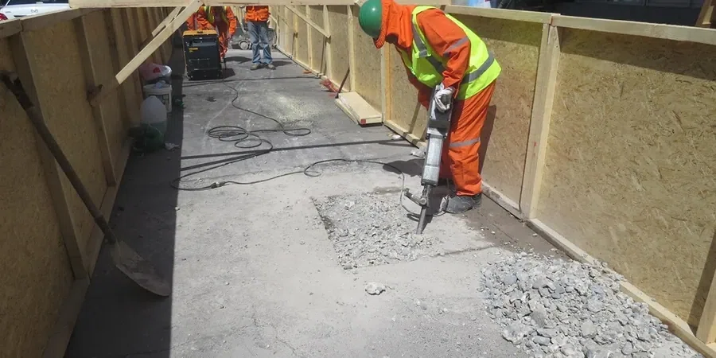

Our Toronto office delivers comprehensive geotechnical engineering services tailored to the region’s unique subsurface conditions. From site characterization and foundation design to subsurface investigation and construction monitoring, we provide integrated solutions that ensure project safety, efficiency, and regulatory compliance. Our local team combines global expertise with an intimate understanding of Toronto’s geology, enabling us to address challenges such as variable glacial deposits and high water tables. Whether you are planning a high-rise tower, transit corridor, or infrastructure upgrade, we offer reliable, code-compliant reports and practical recommendations. Explore our capabilities in cone penetration testing and retaining wall design to see how we support complex urban projects.

Technical reference image — Toronto
Approach and scope
Toronto’s subsurface is dominated by glacial and post-glacial deposits from the Wisconsinan glaciation. The typical soil profile includes a layer of fill or topsoil underlain by glacial till—a dense mixture of sand, silt, clay, and gravel—often interbedded with glaciolacustrine clays and silts, such as the Halton Till and the Thorncliffe Formation. These deposits can be highly variable over short distances, with significant changes in grain size and consistency. Below the till, bedrock consists of shales, siltstones, and sandstones of the Georgian Bay Formation (Upper Ordovician), which can be relatively weak and prone to weathering near the surface. Groundwater levels are generally shallow, typically within 2 to 5 metres of the surface, and can be influenced by seasonal recharge and local drainage patterns. Seismic hazards in Toronto are low, but site amplification due to soft soil conditions must be considered for sensitive structures. Regional subsidence is not a major concern, though settlement from dewatering or loading on compressible clays requires careful analysis. Our soil mechanics study services address these local challenges with advanced testing and modeling.
Site-specific factors
Our team brings consolidated regional experience across Toronto’s diverse project types, from deep foundations for condominiums to earthworks for transit expansion. We operate a calibrated laboratory for index and strength testing, ensuring reliable data for design. Our engineers coordinate closely with local contractors, building officials, and approval authorities, streamlining permitting and construction. By combining local knowledge with advanced analytical tools, we deliver practical, cost-effective solutions that stand up to scrutiny. Our commitment to ongoing professional development and adherence to Ontario’s strict code requirements make us a trusted partner for developers, architects, and public agencies.
All our geotechnical work in Toronto adheres to the National Building Code of Canada (NBCC 2020) and the Ontario Building Code (OBC), which reference standards such as CSA A23.2-9A / CSA A23.2-9A / CSA A23.2-9A / CSA A23.2-9A / CSA A23.2-9A / ASTM D1586 for Standard Penetration Testing, CFEM (Canadian Foundation Engineering Manual) for Unified Soil Classification, and CSA A23.1 for concrete durability. For seismic design, we apply the NBCC’s site-specific response spectra and follow ASCE 7-22 methodologies where applicable. Laboratory testing follows ASTM standards, and our reports are prepared in accordance with the Canadian Geotechnical Society’s (CGS) “Canadian Foundation Engineering Manual” (5th edition). This rigorous compliance ensures our recommendations meet regulatory requirements and industry best practices.
Quick answers
What are the typical soil conditions for high-rise foundations in downtown Toronto?
Downtown Toronto often features glacial till overlying shale bedrock, but the till can be interbedded with soft clays and silts. Deep foundations (caissons or piles) typically bear on the shale or dense till. Groundwater is often encountered at shallow depths, requiring dewatering or waterproofing measures. Our site-specific investigations characterize the variability to optimize foundation design.
How does the Ontario Building Code address geotechnical reporting for new developments?
The Ontario Building Code (OBC) requires a geotechnical report for any building with foundation elements. The report must include soil classification, groundwater conditions, bearing capacity, settlement estimates, and recommendations for excavation support. Reports must be prepared by a licensed professional engineer and submitted with the permit application. Our reports meet OBC Part 4 requirements and facilitate smooth approvals.
What is the typical timeline for a subsurface investigation in Toronto?
A standard investigation for a mid-rise project—including borehole drilling, sampling, laboratory testing, and report preparation—typically takes 4 to 6 weeks. Complex sites with deep boreholes or contamination assessments may take longer. We coordinate with utility locates and site access to minimize delays. Rush services are available for time-sensitive projects.
Are there specific challenges for building on the Oak Ridges Moraine near Toronto?
The Oak Ridges Moraine consists of sandy and gravelly glacial deposits with high permeability, leading to significant groundwater flow and potential for erosion. Foundations must account for variable soil density and possible piping. Stormwater management is critical due to the moraine’s role as a recharge area. Our experience with these conditions ensures proper drainage and foundation design.
Location and service area
We serve projects across Toronto and its metropolitan area.